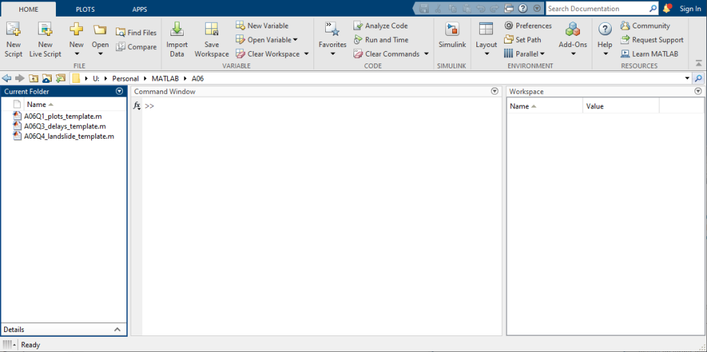
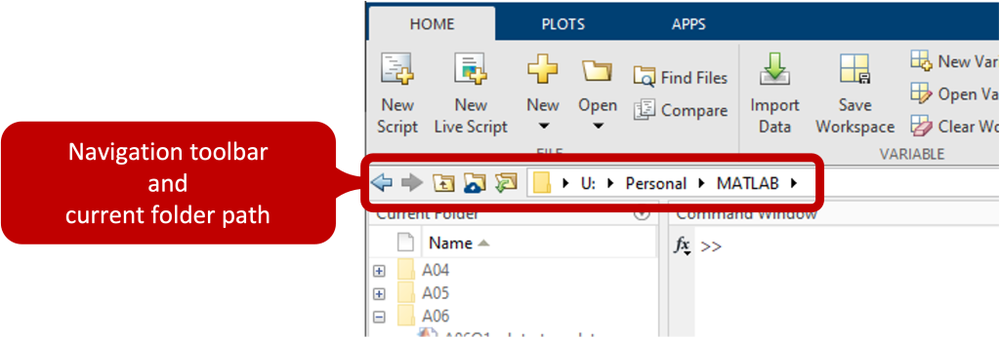
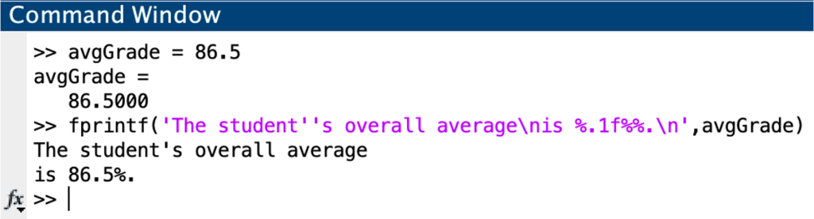
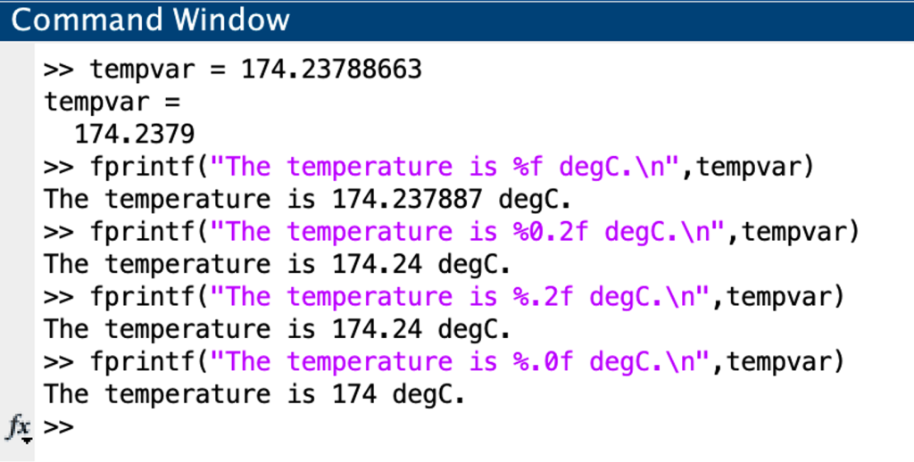

Oct 02, 2026 | 1594 words | 16 min read
4.1.1. PCMs: MATLAB Foundations#
Before You Begin
Before beginning this module, make sure you have access to MATLAB. You will need to create a MathWorks account using your Purdue email address.
You may either download and install MATLAB on your computer or use MATLAB Online in your web browser.
See the Course Software page for instructions to create your MathWorks account and access MATLAB.
Transitioning from Python to MATLAB#
You have already learned foundational programming concepts using Python. Many of those same concepts apply in MATLAB, including:
storing values in variables,
performing mathematical calculations,
using built-in functions,
organizing code in script files,
documenting code with comments, and
displaying results.
You do not need to relearn these programming concepts. Instead, this module focuses on how to apply them using MATLAB syntax and the MATLAB programming environment. Throughout this module, pay particular attention to similarities and differences between Python and MATLAB.
MATLAB Environment#
MATLAB includes several areas that you will use while developing and testing programs. The three areas most important in this course are the Current Folder, Command Window, and Workspace.


Fig. 4.1 MATLAB interface showing the Current Folder, Command Window, and Workspace.#
Command Window#
The Command Window allows you to enter and execute MATLAB commands directly. This is useful for testing individual commands and exploring how MATLAB behaves before adding code to a script.
Workspace#
The Workspace displays variables that currently exist in the MATLAB environment and information about those variables.
You can also inspect variables from the Command Window:
Command |
Purpose |
|---|---|
|
List variables currently in the Workspace |
|
List variables and additional information about them |
|
Remove a specific variable from the Workspace |
|
Remove all variables from the Workspace |
Current Folder#
MATLAB uses the Current Folder to locate scripts, functions, and other files.


Fig. 4.2 The navigation toolbar displays the path to the current folder.#
Before running a MATLAB file, make sure the file is located in the Current Folder.
Check for Understanding
A variable named velocity appears in the Workspace. Which command removes only velocity from the Workspace?
Show Answer
Correct Answer: clear velocity
clear velocity removes the specified variable while leaving other variables in the Workspace unchanged.
Variables and Algebraic Operations#
Variable Names#
As in Python, MATLAB uses variables to store values that can be used in calculations. Variables are assigned using the equals sign (=).
For example:
mass = 12.5;
velocity = 4;
MATLAB variable names:
must begin with a letter,
may contain letters, numbers, and underscores,
cannot contain spaces or special characters, and
are case-sensitive.
Use descriptive variable names that communicate what the stored value represents. Avoid using the names of MATLAB built-in functions or predefined variables, such as pi, as
variable names.
Algebraic Operations#
MATLAB uses operators to perform algebraic calculations.
Operation |
MATLAB Operator |
Example |
|---|---|---|
Addition |
|
|
Subtraction |
|
|
Multiplication |
|
|
Division |
|
|
Exponentiation |
|
|
MATLAB vs. Python
Python uses ** for exponentiation, while MATLAB uses ^.
MATLAB follows the standard order of operations. Parentheses can be used to control the order in which operations are performed and should be paired carefully when translating mathematical expressions into MATLAB code. For example, the mathematical expression
can be written in MATLAB as:
q = (m * c * (T_f - T_i)) / t;
When translating an equation into MATLAB, verify that all required multiplication operators and parentheses are included and that the MATLAB expression represents the intended mathematical relationship.
Check for Understanding
Which MATLAB statement correctly represents the equation \(P = \frac{V^2}{R}\)?
A. P = V**2 / R;
B. P = V^2 / R;
C. P = V * 2 / R;
D. P = (V / R)^2;
Show Answer
Correct Answer: B.
MATLAB uses ^ for exponentiation. The expression V^2 / R squares V and then divides the result by R.
Built-in Functions#
MATLAB includes many built-in functions for performing common mathematical and computational operations. As in Python, functions are called by providing the required inputs inside parentheses.
For example:
root = sqrt(25);
Some commonly used mathematical functions include:
Operation |
MATLAB Function |
Example |
|---|---|---|
Square root |
|
|
Sine |
|
|
Cosine |
|
|
Tangent |
|
|
Natural logarithm |
|
|
Base-10 logarithm |
|
|
Built-in Function Parameters (Inputs)#
It is important to understand the parameters expected by a function. For example, the trigonometric functions sin, cos, and tan expect angles measured in radians. MATLAB also provides corresponding functions that operate on angles measured in degrees:
cos(pi / 3) % evaluates in radians
cosd(60) % evaluates in degrees
Both expressions calculate the cosine of a 60-degree angle.
Similarly, log calculates the natural logarithm, while log10 calculates the base-10 logarithm.
Check for Understanding
An angle is stored in the variable theta in degrees. Which MATLAB expression should
be used to calculate its cosine?
A. cos(theta)
B. cosd(theta)
C. cos(theta, degrees)
D. cosine(theta)
Show Answer
Correct Answer: B. cosd(theta)
The cos function expects an angle in radians, while cosd operates on angles measured in degrees.
User Input#
Programs can obtain values from a user while the program is running. This allows the same script to perform calculations using different values without changing the code itself.
In MATLAB, the input function displays a prompt in the Command Window and waits for the user to enter a value. The entered value can then be stored in a variable.
a program can prompt the user to enter an angle in degrees:
theta = input('Enter the angle (deg): ');
When this line is executed, MATLAB displays:
Enter the angle (deg):
The program pauses until the user enters a value. If the user enters 30, the numeric value 30 is stored in theta and can be used in subsequent calculations. Because the prompt specifies that the angle should be entered in degrees, a degree-based trigonometric function should be used:
vertical_component = sind(theta);
When writing an input prompt, clearly identify the quantity the user should enter and include the expected units when applicable. Including the expected units in the input prompt is especially important when working with angles because MATLAB provides different trigonometric functions for angles measured in radians and degrees.
MATLAB vs. Python
This is similar to using input() in Python. However, Python’s input() returns the user’s entry as a string, which typically requires a type conversion before the value can be used in a numerical calculation. MATLAB’s input function evaluates numerical input and stores it as numeric data directly.
Using MATLAB Documentation#
When using an unfamiliar built-in function, use MATLAB’s documentation to determine:
what the function does,
what inputs the function requires,
what outputs the function produces, and
any limitations or requirements associated with the function.
The help command displays information about a function in the Command Window.
help function_name
The doc command opens the MATLAB documentation for a function.
doc function_name
Using documentation to determine how a function works, what inputs it requires, and what outputs it produces is an expected programming skill.
MATLAB vs. Python
Do not assume that a MATLAB function behaves exactly like a similarly named function in another programming language. Verify the function and its required inputs before using it in a calculation.
MATLAB Scripts#
A MATLAB script is a file containing a sequence of MATLAB commands. Scripts allow you to save, organize, and execute code rather than entering commands individually in the Command Window.
MATLAB scripts use the .m file extension and are created and edited in the Editor.
Script Organization#
As with Python programs, MATLAB scripts should be organized so that the purpose and structure of the code are clear. Scripts should follow the programming standards used throughout this course.
Use comments to document important information and explain the purpose of sections of code. In MATLAB, comments begin with a percent sign (%).
% Calculate the kinetic energy of an object
mass = 10;
velocity = 4;
kinetic_energy = 0.5 * mass * velocity^2;
Avoid hardcoding values directly into calculations when those values represent quantities that may change. Instead, assign values to descriptive variables and use those variables throughout the script.
Check for Understanding
Consider the following MATLAB code: volume = pi * 0.08^2 * height;
The value 0.08 represents the radius of a cylindrical tank and may change between calculations. How should this code be improved?
Show Answer
Correct Answer: Assign the radius to a descriptive variable and use that variable in the calculation. This avoids hardcoding the radius directly into the calculation and makes the code easier to understand and modify.
Running a Script#
Before running a script, save the file and make sure MATLAB’s Current Folder is set to the folder containing the script.
A script can be executed using the Run button in the Editor or by entering the script name in the Command Window.
When a script runs, variables created by the script are added to the MATLAB Workspace.
Suppressing Output#
By default, MATLAB displays the result of a statement in the Command Window. End a statement with a semicolon (;) when its result does not need to be displayed.
mass = 10;
velocity = 4;
kinetic_energy = 0.5 * mass * velocity^2;
Using semicolons prevents unnecessary output from cluttering the Command Window. Results that should be communicated to the user can instead be displayed intentionally using formatted output.
Displaying Results with fprintf#
MATLAB’s fprintf function displays formatted text and values in the Command Window. Using formatted output allows results to be communicated clearly with descriptive text,
appropriate precision, and units.
The general structure of an fprintf statement is:
fprintf('format text', variables)
Note that using a format specifier changes how a value is displayed, but it does not round or change the value stored in the variable.
For example:
velocity = 12.4567;
fprintf('The velocity is %.2f m/s.\n', velocity)
This displays:
The velocity is 12.46 m/s.
The value stored in velocity remains 12.4567.
Format Specifiers#
A format specifier indicates where and how a value should appear in the displayed text.
The number in a numeric format specifier controls the number of digits displayed after the decimal point. For example, %.3f displays three digits after the decimal point.
Format Specifier |
Purpose |
|---|---|
|
Display a numeric value |
|
Display a numeric value with two decimal places |
|
Display a numeric value with no decimal places |
|
Display text stored in a string |
|
Begin a new line |
|
Display a percent sign |
The following example displays a student’s average to one decimal place, includes a percent sign, and places part of the output on a new line.


Fig. 4.3 Example of using fprintf to display a numeric result with text and a percent sign.#
Choose a level of precision that is appropriate for the value being communicated rather than using the same number of decimal places for every result.


Fig. 4.4 The format specifier controls the number of decimal places displayed by fprintf.#
Displaying Multiple Values#
A single fprintf statement can display multiple values. The variables are listed after the format text in the same order as their corresponding format specifiers.
mass = 10.5;
velocity = 4.25;
fprintf('Mass: %.1f kg, Velocity: %.2f m/s\n', mass, velocity)
Each format specifier must correspond to the appropriate value provided to fprintf.